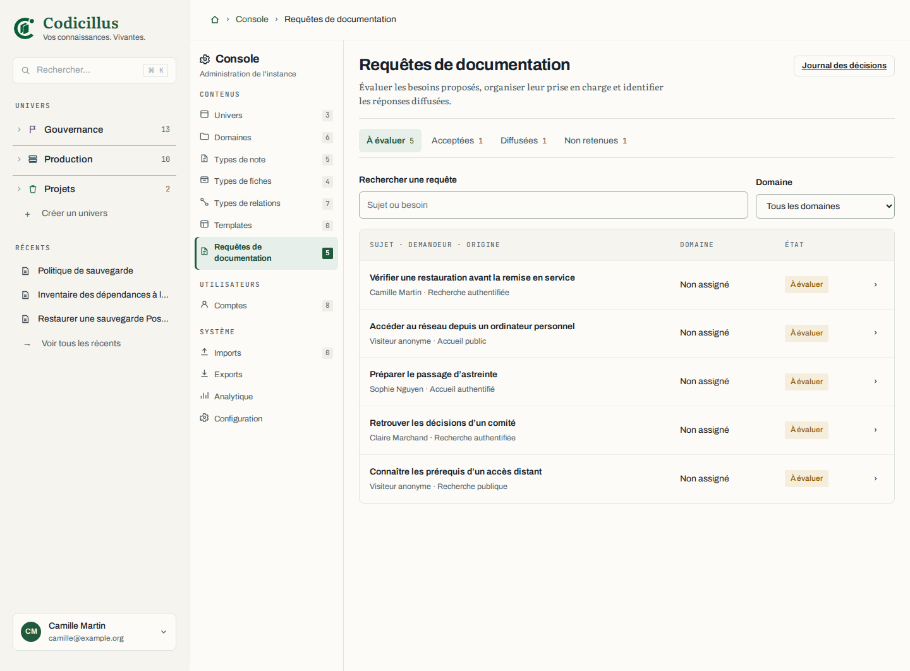

Une entrée permanente et secondaire
Le besoin peut être proposé sans recherche et sans compte, y compris quand aucun guide n’est publié.
Déposer librement, évaluer en console, distinguer l’acceptation de la diffusion. Les ajouts prennent place dans les vues réelles de Codicillus.

Comparer chaque vue actuelle avec sa proposition.
Le besoin peut être proposé sans recherche et sans compte, y compris quand aucun guide n’est publié.
Une ligne d’évaluation pour les administrateurs ; une ligne d’actualité pour le demandeur. Les compteurs de vivacité restent distincts.
Quatre files, une qualification, une note associée, des commentaires séparés et un historique de décisions.
Les formulaires et décisions agissent sur le jeu de maquette dans cet onglet. Aucun dépôt n’est envoyé à l’application.
Déposez une requête depuis l’accueil public ou connecté. Revenez au choix des vues, ouvrez la console puis la requête : acceptez-la, associez une note ou rédigez-en une, publiez puis confirmez la diffusion. Le suivi personnel montre les décisions destinées au compte de démonstration.
Les liens « Vue actuelle » affichent les rendus extraits avant les ajouts. Les liens de navigation vers les fonctions existantes ouvrent l’application locale dans un autre onglet. Les changements du prototype sont conservés dans l’onglet ; un lien dédié permet de réinitialiser les exemples.
Les états sans univers, domaine ni note proviennent d’une base distincte réellement migrée vide. Le compte affiché est anonymisé. Les requêtes et leur historique sont des exemples de maquette.
Lire les décisions de maquette et le périmètre →